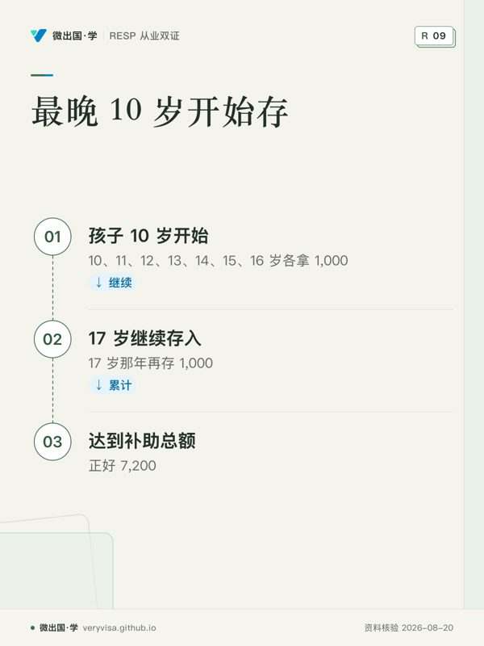
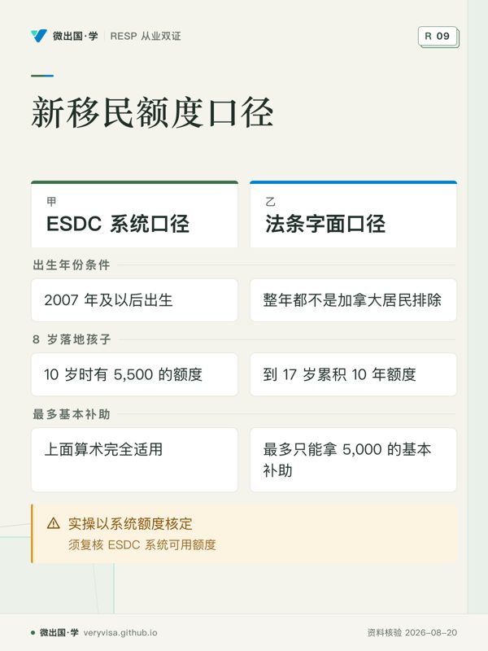

老吴的儿子今年 11 岁。前几年家里买房、换工作，RESP 一直只是「有空再说」。今年手头宽裕了，他问了两个人：一个朋友说「晚了，补助只能拿当年的」；另一个说「额度一直累积，随时能追回来」。
两个人都只说对了一半。额度确实一直累积，但追补有速度上限，所以晚到某个年龄，就追不完了。这一页把这笔账算清楚。
先把三个数记住
联邦基本补助（CESG）的规则，决定追补节奏的只有三个数：
- 每年新增额度 500：每个孩子每年累积 500 的补助额度，没开户也累积，直到 17 岁那年年底。来源
- 单年上限 1,000：有未用额度时，一年最多拿 1,000（对应存 5,000，按 20% 配）；没有未用额度时，一年最多 500。来源
- 终身上限 7,200：一个孩子一生能拿的基本补助加额外补助，合计不超过 7,200。来源
补助只付到孩子 17 岁那年年底，之后的供款不再配补助。来源 所以问题变成：从某个年龄开始，每年最多拿 1,000，到 17 岁那年能拿够 7,200 吗？
为什么是「最晚 10 岁」
7,200 拆开是 7 个 1,000 加 1 个 200。每年最多 1,000，就需要 8 个补助年，其中 7 年每年存 5,000，最后一年存 1,000。
孩子 10 岁那年开始，10、11、12、13、14、15、16 岁各拿 1,000，共 7,000；17 岁那年再存 1,000，拿 200，正好 7,200。供款合计 36,000，远低于每个孩子终身 50,000 的供款上限。来源
额度够不够用？按系统的口径，额度从出生那年起算，10 岁那年累计已有 5,500，到 17 岁累计 9,000，足够每年支取 1,000。
晚一年会怎样？11 岁开始，11 到 17 岁只有 7 个补助年，每年最多 1,000，一共 7,000，少拿 200。12 岁开始少拿 1,200，14 岁开始只剩 4 个补助年，最多拿 4,000。老吴的儿子 11 岁，最多还能拿 7,000——对大多数家庭来说，这已经很接近上限了，不值得因为少了 200 而灰心。
下面的演示可以拖动「开始年龄」和「落地年份」，看每一年的额度、供款和补助怎么变。
新移民孩子：额度的两种口径
上面的算术假设额度从出生那年开始累积。对在加拿大出生的孩子，这没有疑问；对小时候才来加拿大的孩子，有两个口径：
ESDC 系统口径。 ESDC 给 RESP 机构的操作指引写得很清楚：2007 年及以后出生的孩子，补助额度从出生那年开始累积。来源 按这个口径，一个 8 岁落地的孩子，10 岁时照样有 5,500 的额度，上面「最晚 10 岁」的算术完全适用。
法条字面口径。 《加拿大教育储蓄法》算额度的公式，把孩子「整年都不是加拿大居民」的年份排除在外，落地当年只要住过就整年计入。来源 按这个口径，8 岁落地的孩子，到 17 岁只累积 10 年的额度，一共 5,000，最多只能拿 5,000 的基本补助，无论什么时候开始存。
两个口径的差距可以很大。目前没有查到 ESDC 就「追补了落地前年份」追回补助的公开案例，实操上以 RESP 机构替你查到的 ESDC 系统可用额度为准。完整的来龙去脉见新移民追补。
额外补助不能追补
家庭收入不高的，每年头 500 的供款还能多拿额外补助：2026 年调整后家庭净收入 58,523 以下加 20%，58,523 到 117,045 之间加 10%。来源 但它不能结转，某一年没存，那一年的额外补助就没了。来源
这意味着，对收入在线下的家庭，「前几年一分不存、后来一次存 5,000」比「每年都存」要吃亏：基本补助能追，额外补助追不回来。而额外补助也算进 7,200 的终身上限，所以它不是「多拿」，而是「更早拿到」——早拿的钱在账户里多投资几年。
钱不够每年 5,000 怎么办
不是每家都能连续七年每年拿出 5,000。几种折中：
- 能存多少存多少，先保住每年 2,500。 这样至少当年的 500 不浪费，欠下的额度留着以后追。
- 把追补集中在收入好的年份。 额度不会作废，某年有奖金、退税，就一次存到 5,000。
- 别忘了 15 岁那条线。 孩子 16、17 岁时要继续拿补助，15 岁那年年底前要么累计存满 2,000（未取出），要么此前有 4 个年度每年至少存 100。来源 从 10 岁开始存的家庭自然满足；详见 15–17 岁。
老吴的算法
老吴决定：今年起每年存 5,000，一直存到儿子 16 岁，17 岁再存 1,000。这样拿到 7,000。他让机构先查了系统额度，确认儿子（在加拿大出生）的未用额度足够。他把每月约 417 元设成自动转账，年底前如果有奖金，就直接补到 5,000。
一笔具体的账：两个孩子、有限的钱
老吴的邻居有两个孩子，一个 12 岁、一个 9 岁，都没开过户，家里每年最多能拿出 6,000 给 RESP。怎么分？
先看 12 岁的孩子：到 17 岁还有 6 个补助年，每年最多 1,000，最多能拿 6,000。要拿满，每年要存 5,000，而且 15 岁年底的条件会自然满足。
再看 9 岁的孩子：到 17 岁还有 9 个补助年，比拿满 7,200 所需的 8 年还多一年。他的余地大得多：前几年每年存 2,500 拿 500，后面再加速追补，也来得及。
所以在钱有限时，一个合理的顺序是：先保大的，后补小的。每年 6,000，给 12 岁的存 5,000，给 9 岁的存 1,000：大的这 6 年每年拿 1,000，一共 6,000；小的这 5 年每年拿 200，一共 1,000。等大的过了 17 岁，小的正好 14 岁，把 5,000 转到他身上，14 到 17 岁再拿 4,000。两个孩子合计 11,000。如果两个孩子每年平分 3,000，大的 6 年拿 3,600、小的 9 年拿 5,400，合计 9,000。同样的钱，先后顺序排对了，多拿约 2,000。
这只是补助这一侧的算术。家里钱的用途不止 RESP，是否该先还贷、先存 RRSP，是另一笔账，见RESP 与各项福利的联动。
追补时常见的三个错
一是以为「多存多拿」。 有未用额度时一年最多拿 1,000，存 10,000 也只拿 1,000，多出来的 5,000 不配补助。来源 多存的钱不是没用，它在账户里延税增长；但若目的是拿补助，一年 5,000 就是顶。
二是在两家机构各存 5,000。 额度按孩子算，不按账户算，两家合计一年仍只拿 1,000。终身 50,000 的供款上限也按孩子合计，超额每月罚 1%。来源
三是追补到一半取钱。 15 岁年底前取出的钱，会让 16、17 岁的条件变得不满足；而且取出含补助的部分，要按规则退还补助。取钱之前先问机构会有什么后果。
带走这张清单
- 让机构查孩子在 ESDC 系统里的可用补助额度。
- 按「每年存 5,000 拿 1,000」排出到 17 岁的时间表，算出最多还能拿多少。
- 小时候才来加拿大的孩子，两种口径都算一遍，以系统额度为准。
- 收入在线下的，每年至少存 500，额外补助不能追补。
- 确认 15 岁年底前满足 16、17 岁的补助条件。
- 设每月自动转账，年底前补齐。
从业者要多知道的
给 10 岁以上孩子的家庭做规划，先问已存多少、是否在别的机构开过户（额度按孩子合并），再给出「最多还能拿多少」的具体数字，而不是泛泛地说「可以追补」。对新移民家庭，照实说明两个额度口径，不替客户保证系统一定显示多少（见KYC 与从业行为）。
来源
- canada.ca，RESP 能加多少钱：https://www.canada.ca/en/services/benefits/education/education-savings/estimating-amounts.html
- 《加拿大教育储蓄法》全文：https://laws-lois.justice.gc.ca/eng/acts/c-3.6/FullText.html
- ESDC Infocapsule 12（额度与结转）：https://www.canada.ca/content/dam/canada/employment-social-development/migration/documents/assets/portfolio/docs/en/reports/resp_promoters/infocapsules/ic-12-grant-room-and-carry-forward.pdf
- ESDC，2026 年额外补助收入线：https://www.canada.ca/en/employment-social-development/services/student-financial-aid/education-savings/resp/resp-promoters/bulletin/notice-2025-1114.html
- CRA，RESP 供款：https://www.canada.ca/en/revenue-agency/services/tax/individuals/topics/registered-education-savings-plans-resps/resp-contributions.html
- 注册教育储蓄与残障补助（税务站）：https://veryvisa.github.io/academy-tax-personal/docs/ca-invest-06-registered-education-and-disability-grants-2026.html
本页是一般性说明，不替你做税务或投资决定；个案以 ESDC、CRA 的核定和持牌专业人士的意见为准。
听、看、翻：10–14 岁：补助追补与供款节奏
制作中
制作中
制作中
制作中
本页知识卡
不看正文也能拿到这一节的核心内容：先看导读，再看图。点图放大，左右翻页。

- 先看先看开始年龄节点，它决定补助年数量。
- 易漏晚一年开始会减少可用补助年，金额需按年龄核算。
- 下一步去看知识卡，带开始年龄找持牌专业人士。

- 先看先看两种口径的差异行，判断适用情形。
- 易漏新移民孩子存在不同计算口径，不能直接套用。
- 下一步去看讲解，带落地年份找持牌专业人士。